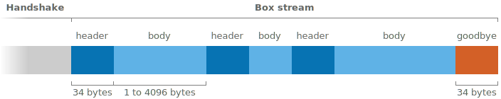
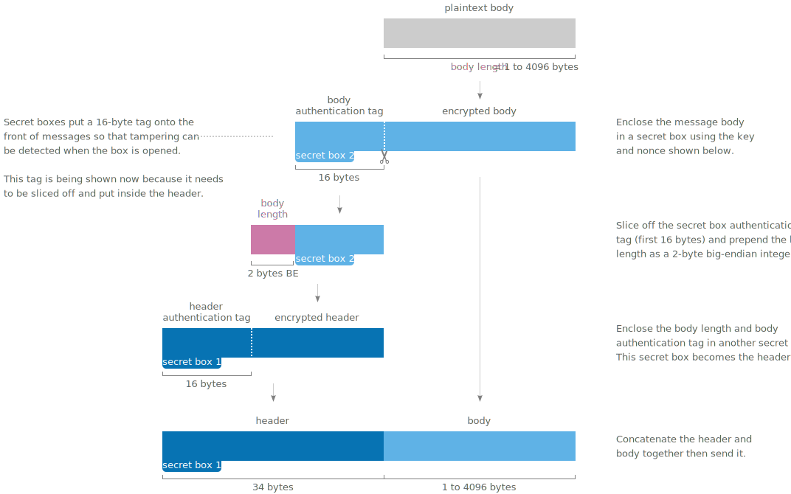
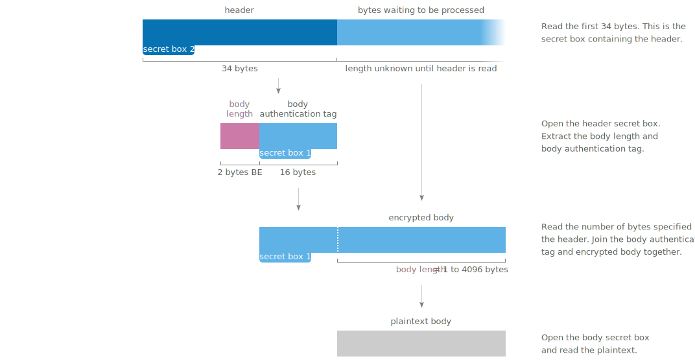
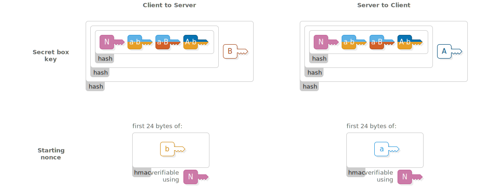
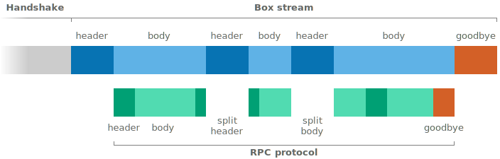
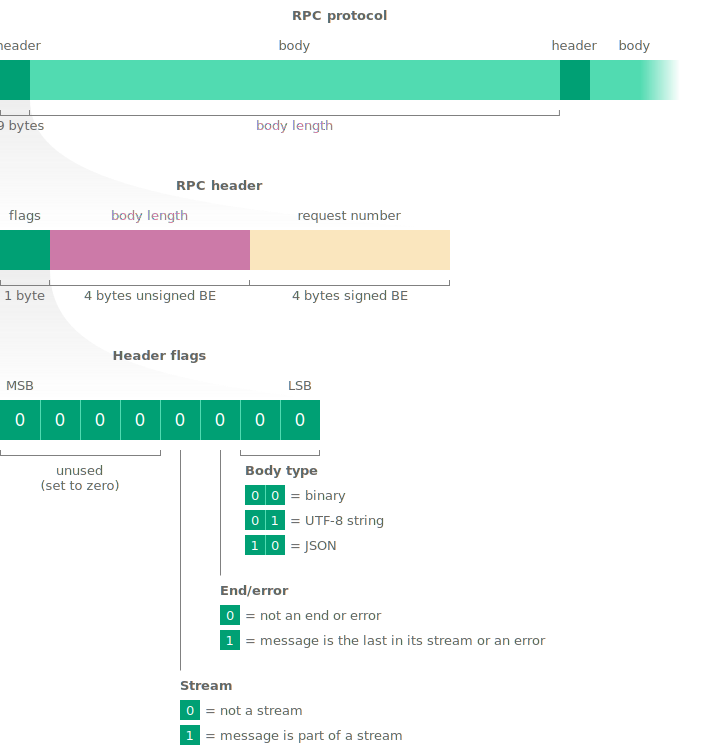

Scuttlebutt Protocol Guide
How Scuttlebutt peers find and talk to each other
Contents
Handshake
Once a Scuttlebutt client has discovered the IP address and port number of a peer they connect via TCP to exchange messages. The connection begins with a 4-step handshake to authenticate each peer and set up an encrypted channel.

The handshake uses the Secret Handshake key exchange which is designed to have these security properties:
- After a successful handshake the peers have verified each other’s public keys.
- The handshake produces a shared secret that can be used with a bulk encryption cypher for exchanging further messages.
- The client must know the server’s public key before connecting. The server learns the client’s public key during the handshake.
- Once the client has proven their identity the server can decide they don’t want to talk to this client and disconnect without confirming their own identity.
- A man-in-the-middle cannot learn the public key of either peer.
- Both peers need to know a key that represents the particular Scuttlebutt network they wish to connect to, however a man-in-the-middle can’t learn this key from the handshake. If the handshake succeeds then both ends have confirmed that they wish to use the same network.
- Past handshakes cannot be replayed. Attempting to replay a handshake will not allow an attacker to discover or confirm guesses about the participants’ public keys.
Starting keys
Upon starting the handshake, the client and server know these keys:

1. Client hello

Client sends (64 bytes)
Server verifies
concat(
nacl_auth(
msg: client_ephemeral_pk,
key: network_identifier
),
client_ephemeral_pk
)assert(length(msg1) == 64)
client_hmac = first_32_bytes(msg1)
client_ephemeral_pk = last_32_bytes(msg1)
assert_nacl_auth_verify(
authenticator: client_hmac,
msg: client_ephemeral_pk,
key: network_identifier
)First the client sends their  generated ephemeral key. Also included is an hmac that indicates the client wishes to use their key with this specific instance of the Scuttlebutt network.
generated ephemeral key. Also included is an hmac that indicates the client wishes to use their key with this specific instance of the Scuttlebutt network.
The  network identifier is a fixed 32-byte key. On the main Scuttlebutt network it is:
network identifier is a fixed 32-byte key. On the main Scuttlebutt network it is:
d4a1cb88a66f02f8db635ce26441cc5dac1b08420ceaac230839b755845a9ffbChanging the key allows separate networks to be created, for example private networks or testnets. An eavesdropper cannot extract the network identifier directly from what is sent over the wire, although they could confirm a guess that it is the main Scuttlebutt network because that identifier is publicly known.
The server stores the client’s ephemeral public key and uses the hmac to verify that the client is using the same network identifier.
2. Server hello

Client verifies
Server sends (64 bytes)
assert(length(msg2) == 64)
server_hmac = first_32_bytes(msg2)
server_ephemeral_pk = last_32_bytes(msg2)
assert_nacl_auth_verify(
authenticator: server_hmac,
msg: server_ephemeral_pk,
key: network_identifier
)concat(
nacl_auth(
msg: server_ephemeral_pk,
key: network_identifier
),
server_ephemeral_pk
)The server responds with their own  ephemeral public key and hmac. The client stores the key and verifies that they are also using the same network identifier.
ephemeral public key and hmac. The client stores the key and verifies that they are also using the same network identifier.
Shared secret derivation

Client computes
Server computes
shared_secret_ab = nacl_scalarmult(
client_ephemeral_sk,
server_ephemeral_pk
)
shared_secret_aB = nacl_scalarmult(
client_ephemeral_sk,
pk_to_curve25519(server_longterm_pk)
)shared_secret_ab = nacl_scalarmult(
server_ephemeral_sk,
client_ephemeral_pk
)
shared_secret_aB = nacl_scalarmult(
sk_to_curve25519(server_longterm_sk),
client_ephemeral_pk
)Now that ephemeral keys have been exchanged, both ends use them to derive a shared secret  using scalar multiplication.
using scalar multiplication.
The client and server each combine their own ephemeral secret key with the other’s ephemeral public key to produce the same shared secret on both ends. An eavesdropper doesn’t know either secret key so they can’t generate the shared secret. A man-in-the-middle could swap out the ephemeral keys in Messages 1 and 2 for their own keys, so the shared secret alone is not enough for the client and server to know that they are talking to each other and not a man-in-the-middle.
Because the client already knows the  server’s long term public key, both ends derive a second secret
server’s long term public key, both ends derive a second secret  that will allow the client to send a message that only the real server can read and not a man-in-the-middle.
that will allow the client to send a message that only the real server can read and not a man-in-the-middle.
3. Client accept

Client computes
Server verifies
detached_signature_A = nacl_sign_detached(
msg: concat(
network_identifier,
server_longterm_pk,
sha256(shared_secret_ab)
),
key: client_longterm_sk
)msg3_plaintext = assert_nacl_secretbox_open(
ciphertext: msg3,
nonce: 24_bytes_of_zeros,
key: sha256(
concat(
network_identifier,
shared_secret_ab,
shared_secret_aB
)
)
)
assert(length(msg3_plaintext) == 96)
detached_signature_A = first_64_bytes(msg3_plaintext)
client_longterm_pk = last_32_bytes(msg3_plaintext)
assert_nacl_sign_verify_detached(
sig: detached_signature_A,
msg: concat(
network_identifier,
server_longterm_pk,
sha256(shared_secret_ab)
),
key: client_longterm_pk
)Client sends (112 bytes)
nacl_secret_box(
msg: concat(
detached_signature_A,
client_longterm_pk
),
nonce: 24_bytes_of_zeros,
key: sha256(
concat(
network_identifier,
shared_secret_ab,
shared_secret_aB
)
)
)The client reveals their identity to the server by sending their  long term public key. The client also makes a signature using their
long term public key. The client also makes a signature using their  long term secret key. By signing the keys used earlier in the handshake the client proves their identity and confirms that they do indeed wish to be part of this handshake.
long term secret key. By signing the keys used earlier in the handshake the client proves their identity and confirms that they do indeed wish to be part of this handshake.
The client’s message is enclosed in a secret box to ensure that only the server can read it. Upon receiving it, the server opens the box, stores the client’s long term public key and verifies the signature.
An all-zero nonce is used for the secret box. The secret box construction requires that all secret boxes using a particular key must use different nonces. Using a zero nonce is allowed here because this is the only secret box that ever uses the key sha256(concat( , , )).
Shared secret derivation

Client computes
Server computes
shared_secret_Ab = nacl_scalarmult(
sk_to_curve25519(client_longterm_sk),
server_ephemeral_pk
)shared_secret_Ab = nacl_scalarmult(
server_ephemeral_sk,
pk_to_curve25519(client_longterm_pk)
)Now that the server knows the client’s long term public key, another shared secret  is derived by both ends. The server uses this shared secret to send a message that only the real client can read and not a man-in-the-middle.
is derived by both ends. The server uses this shared secret to send a message that only the real client can read and not a man-in-the-middle.
4. Server accept

Client verifies
Server computes
detached_signature_B = assert_nacl_secretbox_open(
ciphertext: msg4,
nonce: 24_bytes_of_zeros,
key: sha256(
concat(
network_identifier,
shared_secret_ab,
shared_secret_aB,
shared_secret_Ab
)
)
)
assert_nacl_sign_verify_detached(
sig: detached_signature_B,
msg: concat(
network_identifier,
detached_signature_A,
client_longterm_pk,
sha256(shared_secret_ab)
),
key: server_longterm_pk
)detached_signature_B = nacl_sign_detatched(
msg: concat(
network_identifier,
detached_signature_A,
client_longterm_pk,
sha256(shared_secret_ab)
),
key: server_longterm_sk
)Server sends (80 bytes)
nacl_secret_box(
msg: detached_signature_B,
nonce: 24_bytes_of_zeros,
key: sha256(
concat(
network_identifier,
shared_secret_ab,
shared_secret_aB,
shared_secret_Ab
)
)
)The server accepts the handshake by signing a message using their  long term secret key. It includes a copy of the client’s previous signature. The server’s signature is enclosed in a secret box using all of the shared secrets.
long term secret key. It includes a copy of the client’s previous signature. The server’s signature is enclosed in a secret box using all of the shared secrets.
Upon receiving it, the client opens the box and verifies the server’s signature.
Similarly to the previous message, this secret box also uses an all-zero nonce because it is the only secret box that ever uses the key sha256(concat( , , , )).
Handshake complete

At this point the handshake has succeeded. The client and server have proven their identities to each other.
The shared secrets established during the handshake are used to set up a pair of box streams for securely exchanging further messages.
Box stream
Box stream is the bulk encryption protocol used to exchange messages following the handshake until the connection ends. It is designed to protect messages from being read or modified by a man-in-the-middle.
Each message in a box stream has a header and body. The header is always 34 bytes long and says how long the body will be.
Sending
Sending a message involves encrypting the body of the message and preparing a header for it. Two secret boxes are used; one to protect the header and another to protect the body.
Receiving
Receiving a message involves reading the header to find out how long the body is then reassembling and opening the body secret box.
Goodbye
The stream ends with a special “goodbye” header. Because the goodbye header is authenticated it allows a receiver to tell the difference between the connection genuinely being finished and a man-in-the-middle forcibly resetting the underlying TCP connection.
When a receiver opens a header and finds that it contains all zeros then they will know that the connection is finished.
Keys and nonces
Two box streams are used at the same time when Scuttlebutt peers communicate. One is for client-to-server messages and the other is for server-to-client messages. The two streams use different keys and starting nonces for their secret boxes.
The starting nonce is used for the first header in the stream (“secret box 1” in the above figures), then incremented for the first body (“secret box 2”), then incremented for the next header and so on.
RPC protocol
Scuttlebutt peers make requests to each other using an RPC protocol. Typical requests include asking for the latest messages in a particular feed or requesting a blob.
The RPC protocol can interleave multiple requests so that a slow request doesn’t block following ones. It also handles long-running asynchronous requests for notifying when an event occurs and streams that deliver multiple responses over time.
Similar to the box stream protocol, the RPC protocol consists of fixed-length headers followed by variable-length bodies. There is also a goodbye message which is just a zeroed out header.

Both peers make requests to each other at the same time using the pair of box streams that have been established. The box streams protect the RPC protocol from eavesdropping and tampering.
Header structure
RPC headers contain a set of flags to say what type of message it is, a field specifying its length and a request number which allows matching requests with their responses when there are several active at the same time.
